Here are two predictions from the same CIFAR-10 model. Both get the "correct" checkbox in a totally different way.
Prediction A: the model looks at a photo of a cat, and gives the cat class 46.9% probability — just a hair above the runner-up. It happens to be right.
Prediction B: the model looks at a photo of a bird, gives the deer class 49.1% probability, and the bird class comes in a close second. It happens to be wrong.
If you're only tracking accuracy, these two predictions are opposites. One is a 1, the other is a 0. But look at what the network actually believed: both cases, it was basically flipping a coin. The 0.022 gap between 46.9% and 49.1% is nothing — noise, really. Two coin flips landed on different sides, and your scoreboard treats that as a meaningful difference in model quality.
Meanwhile, elsewhere in the same test set, the model looks at a dog and says 100.0% deer. Not "pretty sure." Not "leaning deer." One hundred percent, to four decimal places, on a dog. That's also a 0. Same scoreboard entry as the confused bird. Wildly different situation.
Accuracy can't distinguish "I have no idea" from "I am completely, confidently, catastrophically wrong." It was never designed to. It's a single bit, averaged. And that's the whole subject of this post: how much information gets thrown away between what your network actually computes and the one number you probably report in your README.
I trained 7 models across 4 datasets on a single RTX 3060, ran the same battery of tests on all of them, and some of what came back genuinely surprised me — including one result that flatly contradicts a paper I cite approvingly two sections from now. Let's get into it.
TL;DR: Your network computes a full vector of real-valued scores (logits) for every prediction. Softmax throws away their overall scale. Argmax throws away every score except the winner. Accuracy throws away everything except one bit, then averages. Each step is a real, measurable, one-way information loss — and once you can see it, "90% accurate" stops sounding like a complete sentence.
The pipeline, and what each arrow throws away
Every classifier you've ever trained runs through the same four stages:
raw logits → softmax probabilities → predicted class (argmax) → accuracy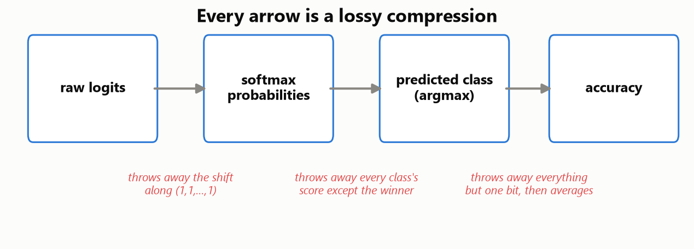
Quick vocabulary check, since I promised to define things as they show up: logits are the raw, unbounded outputs of your network's last layer — one real number per class, before any squashing. Softmax turns those into probabilities that sum to 1. Argmax just picks the class with the highest probability. Accuracy is the fraction of times argmax picked the right one.
Here's the claim I want to make concrete, one arrow at a time: softmax throws away the overall level of the logits (add 10 to every logit and softmax doesn't notice — more on this in a second). Argmax throws away every class's score except the single winner — the runner-up could be a hair behind or a mile behind, argmax reports the same thing either way. Accuracy throws away everything except one bit per sample (right/wrong), then averages ten thousand of those bits into a single float.
None of this is a new discovery — miscalibration in modern networks is a well-documented phenomenon (Guo et al., 2017), and the "softmax throws away scale" idea underlies energy-based out-of-distribution detection (Liu et al., 2020). What I wanted to do here is make it visible and measured, not just asserted — with real numbers from real models, including the places where it didn't behave the way I expected.
What softmax literally cannot see
This part is my favorite, because it's not an approximation or a tendency — it's an exact mathematical fact you can verify to eight decimal places.
Softmax is defined so that adding the same constant c to every logit changes nothing about its output:
The e^c cancels top and bottom. Softmax genuinely cannot see the component of the logit vector pointing along the all-ones direction — it lives in a subspace softmax projects away entirely.
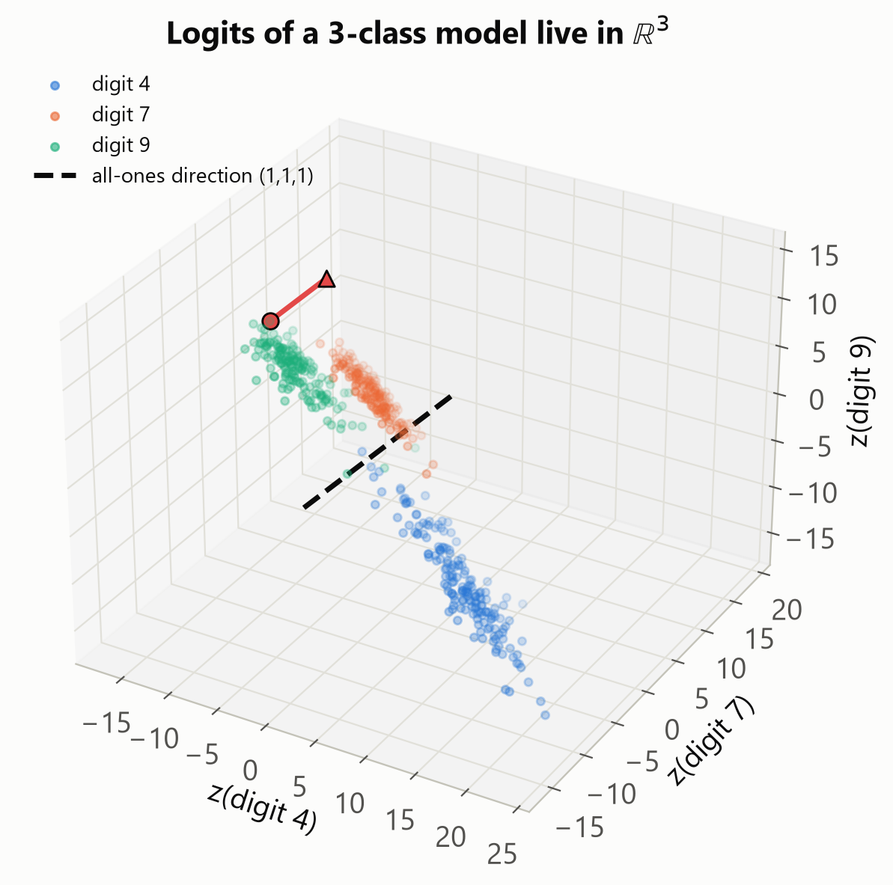
I tested this instead of just asserting it: I took a full CIFAR-10 ResNet-18 test set, added a constant c = 7.3 to every logit for every one of the 10,000 samples, and compared softmax outputs before and after. The maximum absolute difference anywhere in the whole test set was 4.77 × 10⁻⁷ — that's float32 rounding noise, not a real effect. Argmax was identical for all 10,000 samples, no exceptions.
But two quantities did move, by exactly c, every single time: the mean of the logit vector (which I'll call logit_mean), and energy = -logsumexp(z), the score used in energy-based OOD detection. Across the real, unshifted test set, logit_mean has a standard deviation of 0.68 and energy has a standard deviation of 6.42 — real, sample-varying signal that your network computed and softmax will never, structurally, be able to report.
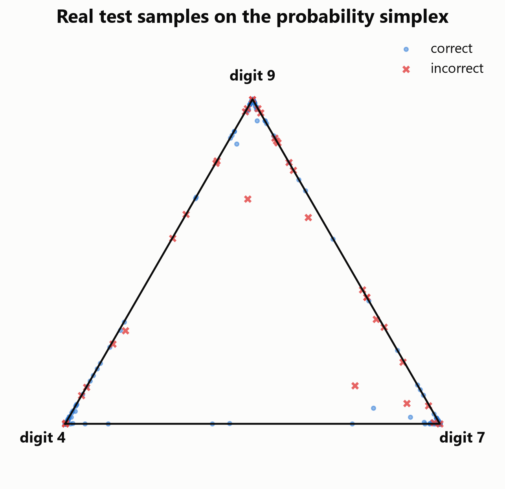
Turning the temperature knob
If softmax can't see the overall scale, what happens if you scale it on purpose? Multiply every logit by a positive constant α and watch what happens.
I ran this sweep — α ∈ {0.1, 0.25, 0.5, 1, 2, 4, 10} — on every model, and the result was exactly what the math predicts, verified bit-for-bit: accuracy was completely unchanged for every single α > 0, on every model. Model A stayed at 0.9846 whether α was 0.1 or 10. Model E stayed at 0.8674. The predicted class agreed with the α=1 prediction 100.00% of the time, for every α tested. Scaling by a positive number can never re-rank the logits, so argmax — and therefore accuracy — is mathematically blind to it.
Confidence, though, is a different story entirely. For model A, mean confidence went from 51.3% at α=0.1 to 99.96% at α=10. Same predictions. Same accuracy. A network that looks nervous at one setting and bulletproof at another, without a single decision actually changing.
# z' = alpha * z is temperature scaling with T = 1/alpha.
# Fit on a held-out split by minimizing NLL — proper temperature scaling.
T = fit_temperature(val_logits, val_labels)
calibrated_probs = softmax(test_logits / T)This is, by the way, exactly temperature scaling — z' = αz is the same operation as z' = z / T with T = 1/α. I bring this up because when I fit the optimal T on a held-out split, the values told their own story: model B (the overtrained one, more on it below) needed T = 5.12 — a huge correction. Models D and G, interestingly, needed T < 1 (0.89 and 0.83) — meaning temperature scaling had to sharpen them slightly, because they came out of training a little underconfident, not overconfident. "Networks are always overconfident" is a tendency in this data, not a law.
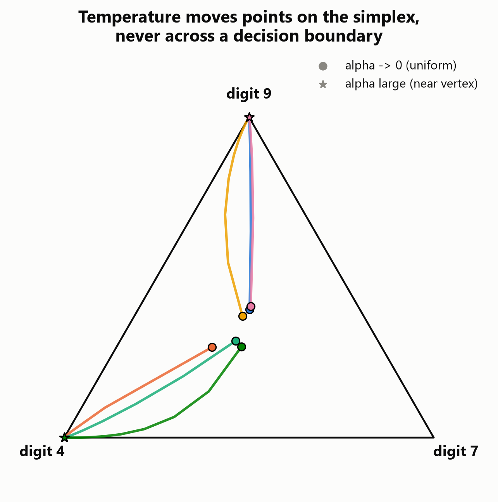
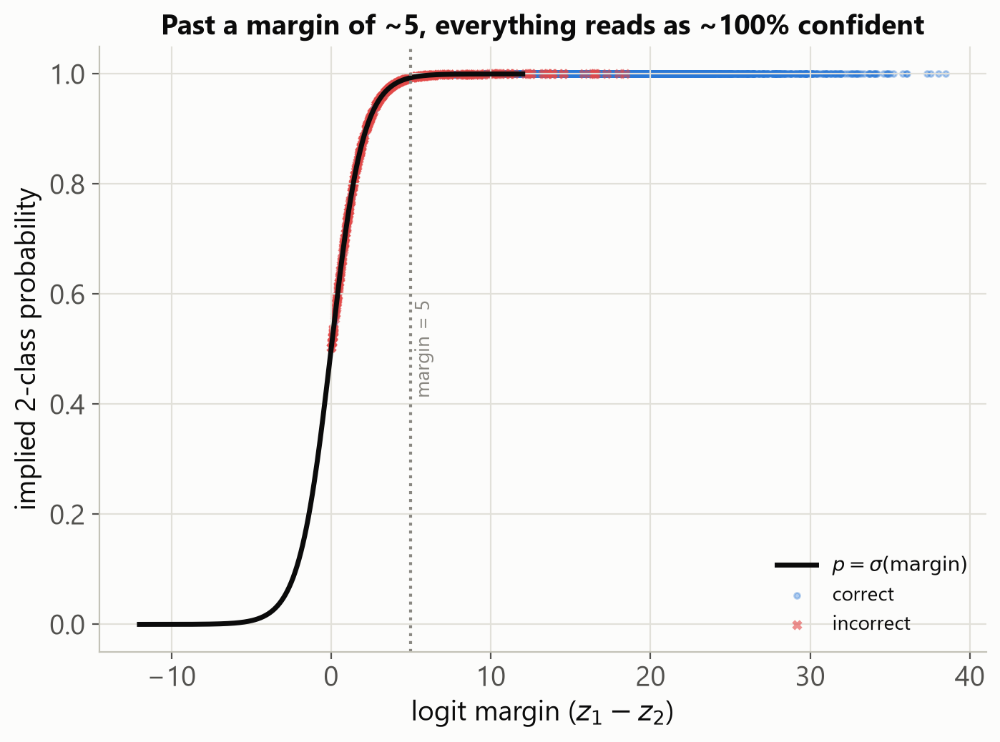
I also tried α = -1, just to check the sign matters as much as the theory says it should: accuracy collapsed to essentially 0 for every model (0.0000 for A, 0.0004 for E). Negative scaling reverses the ranking entirely. Magnitude is invisible to argmax; sign is everything.
Does 90% mean 90%? A calibration reality check
"Calibration" is a simple question dressed up in a scary word: when your model says 90%, is it right 90% of the time? ECE (expected calibration error) answers it by bucketing predictions into confidence bins and measuring the average gap between confidence and actual accuracy in each bin.
Here's every model's ECE, before any correction, from worst to best:
| Model | Accuracy | ECE | Overconfidence gap |
|---|---|---|---|
| C (Fashion-MNIST CNN) | 91.94% | 0.0053 | +0.36pp |
| A (MNIST MLP) | 98.46% | 0.0085 | +0.84pp |
| B (MNIST MLP, overtrained) | 98.42% | 0.0142 | +1.35pp |
| D (CIFAR-10 SmallCNN) | 76.84% | 0.0333 | −3.33pp |
| G (CIFAR-10 ResNet, label smoothing) | 87.30% | 0.0568 | −4.28pp |
| E (CIFAR-10 ResNet-18) | 86.74% | 0.0972 | +9.72pp |
| F (CIFAR-100 ResNet-18) | 58.69% | 0.2546 | +25.46pp |
Two comparisons jump out immediately.
A vs B are trained on identical data with an identical architecture. The only difference is B trained for 120 unregularized epochs instead of 15. Accuracy: 98.46% vs 98.42% — a gap of 0.04 percentage points, essentially nothing. ECE: 0.0085 vs 0.0142 — B is 67% worse calibrated, for the exact same scoreboard result.
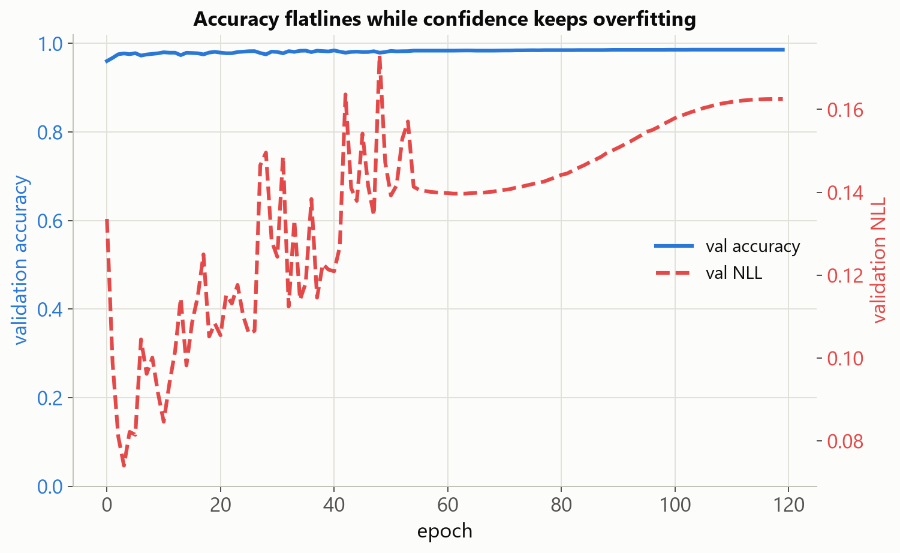
D vs E is the Guo et al. (2017) pattern reproduced almost exactly: same task, and E (deeper, more accurate — 86.74% vs 76.84%) is dramatically worse calibrated, with 3x the ECE and a positive overconfidence gap where D actually runs slightly cautious. Bigger and better on the scoreboard doesn't mean more trustworthy about its own confidence.
F is the most miscalibrated model here by a wide margin — mean confidence of 84.15% against an actual accuracy of 58.69%, a 25-point gap — but that's not really F being unusually badly trained; it's what cross-entropy training on 100 classes does by default, pushing probability mass toward a single vertex regardless of how many classes are genuinely still in play.
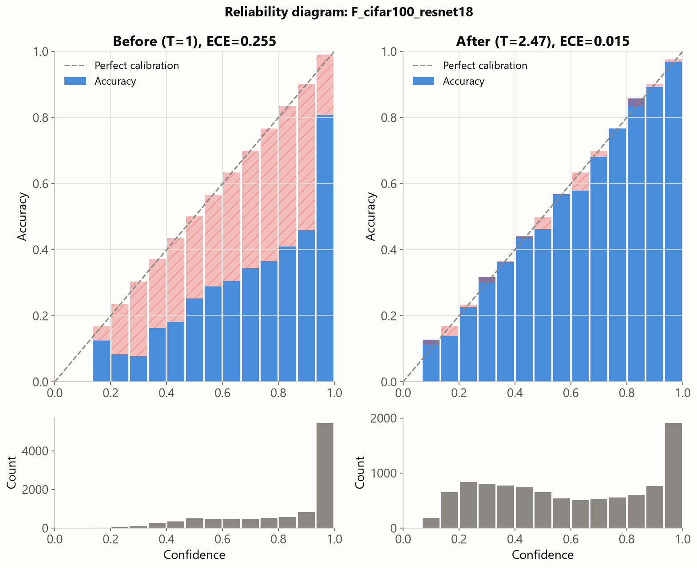
Temperature scaling fixes the bulk of this for every model — but notice it's a post-hoc fix. It doesn't change a single prediction (remember, positive scaling can't touch accuracy), it just makes the reported confidence numbers honest again.
One more thing worth calling out because it's the biggest single lever in this whole experiment: G and E are the same architecture on the same data. The only difference is G trained with label smoothing. ECE: 0.0568 vs 0.0972. That's a training choice — not model size, not dataset difficulty — cutting miscalibration by almost half.
Margin vs. confidence: the plot twist that they're (mostly) the same thing
For the top two classes, there's a clean identity: if z₁ and z₂ are the top two logits, then p₁/p₂ = exp(z₁ − z₂). In other words, the margin (z₁ − z₂, purely a raw-logit quantity) and the max-softmax probability should track each other closely. I predicted they'd behave similarly as correctness signals across most models — and for 6 of my 7 models, that's exactly what happened, with Spearman correlations between 0.95 and 1.00.
Model B broke the pattern. Its correlation dropped to 0.39.
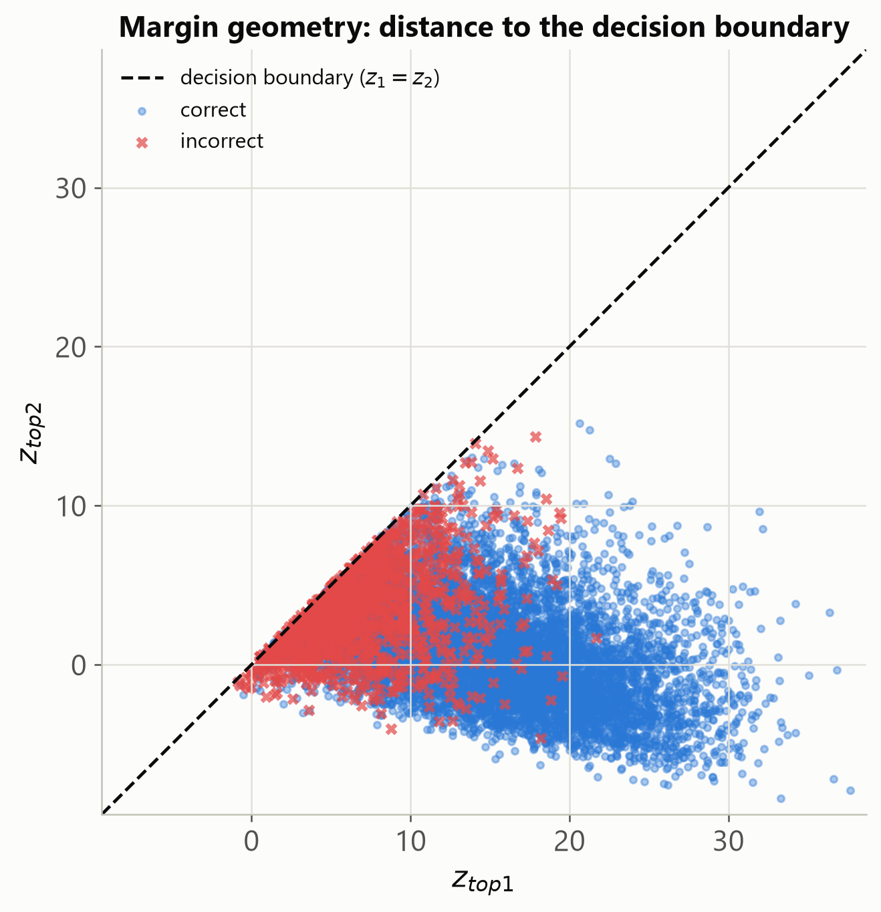
The reason is softmax saturation, and it's the same overtraining story as before: after 120 epochs with no regularization, B's logits grew so large that max-softmax probability sits at 99.9%+ for the overwhelming majority of samples, whether the underlying margin is 3 or 40. The fine-grained ranking that Spearman is measuring just gets crushed flat by the sigmoid — visible directly in the sigmoid-of-margin figure above, where everything past margin ≈ 5 reads as "basically certain."
I also expected CIFAR-100 (F, 100 classes) to break the margin/confidence relationship — with that many classes, probability mass spread across the "long tail" should make p₁ diverge from what a simple two-class margin implies. The rank correlation stayed high (0.990) — my naive prediction was wrong, at least as measured by Spearman. But it did show up somewhere else: on F specifically, the score that uses the whole probability distribution (entropy) edges out the score that only looks at the top two classes (margin) for misclassification detection — 0.834 vs 0.817 AUROC. Right idea, wrong metric to find it in.
Confident on garbage: OOD, and the energy that softmax threw away
This is the section where the thesis pays off — and also where it got contradicted, honestly, by one of my own models.
Out-of-distribution (OOD) detection asks: if you feed the network something it's never seen a real example of, does it know it doesn't know? Liu et al. (2020) showed that the energy score — built from the logsumexp quantity softmax throws away — separates in-distribution from out-of-distribution inputs better than max-softmax probability does. I expected to reproduce that cleanly. For most models, I did: model E gets 0.81 AUROC against SVHN using max-softmax, and comparable numbers against Gaussian noise.
Then there's model D against pure Gaussian noise.
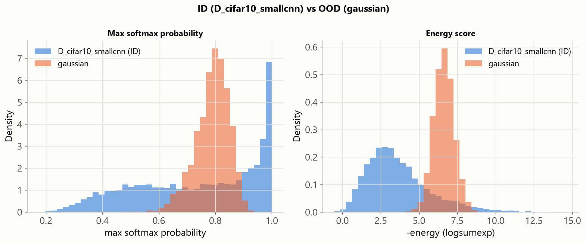
D's mean max-softmax confidence is 78.9% on random noise versus 73.5% on real CIFAR-10 test photos. Its mean energy score points the same wrong way: 6.62 on noise versus 3.66 on real photos. Both scores say the noise looks more like a real photo than real photos do. The resulting OOD-detection AUROC is 0.476 — below the 0.5 line you'd get from flipping a coin. And I mean this literally: the SmallCNN is 93.2% confident that one specific patch of pure Gaussian static is a dog.
That's not the energy-beats-softmax story I was expecting to report. It's a smaller, weaker model with no exposure to anything resembling structured noise during training, and for this specific pairing, neither pipeline stage flags it as suspicious. I'm keeping this result exactly as it came out, because the honest version of this post is more useful than the tidy one — the takeaway isn't "energy always wins," it's "OOD robustness depends on what the network actually learned, not just which score you read off of it."
The scoreboard: how much each stage loses
Here's the table this whole post has been building toward. For every model, I measured how well five different scores — computed at different stages of the pipeline — separate correct predictions from incorrect ones, using AUROC (1.0 = perfect ranking, 0.5 = no better than random).
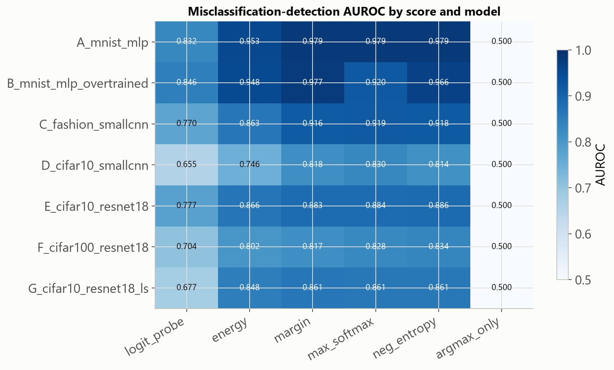
The clean part of the story: argmax_only is exactly 0.5 for every model, every time, because it's a constant score by construction — the number itself doesn't change from sample to sample, so there's nothing for AUROC to work with. That's the whole "throws away everything but one bit" claim, made as concrete as it gets. Meanwhile margin, max_softmax, and neg_entropy — everything downstream of softmax that still varies per-sample — cluster tightly together and beat it by 30-50 points on every model.
The part I didn't expect: I also trained a small logistic-regression probe with the entire raw logit vector as input — more information than any hand-crafted score gets — cross-validated to avoid overfitting. It was the worst of the five real scores on every single model. On model A it scored 0.832 against margin's 0.979. My assumption going in was "more raw information should mean at least as good." What actually happened: a linear probe has to learn a decision boundary from a handful of labeled correct/incorrect examples (and for a 98%-accurate model, there just aren't many incorrect ones to learn from per cross-validation fold), while margin and max_softmax get their excellent boundary for free from the geometry of the top-2 classes. The information is in the logits. A small linear probe isn't automatically the best way to get it out.
Hall of fame: the most confidently wrong predictions
I pulled the 16 highest-confidence mistakes from model E on the CIFAR-10 test set. Every single one sits at 100.0% confidence, rounded — which is itself telling: once this network gets something wrong at this confidence level, it isn't hedging even slightly.
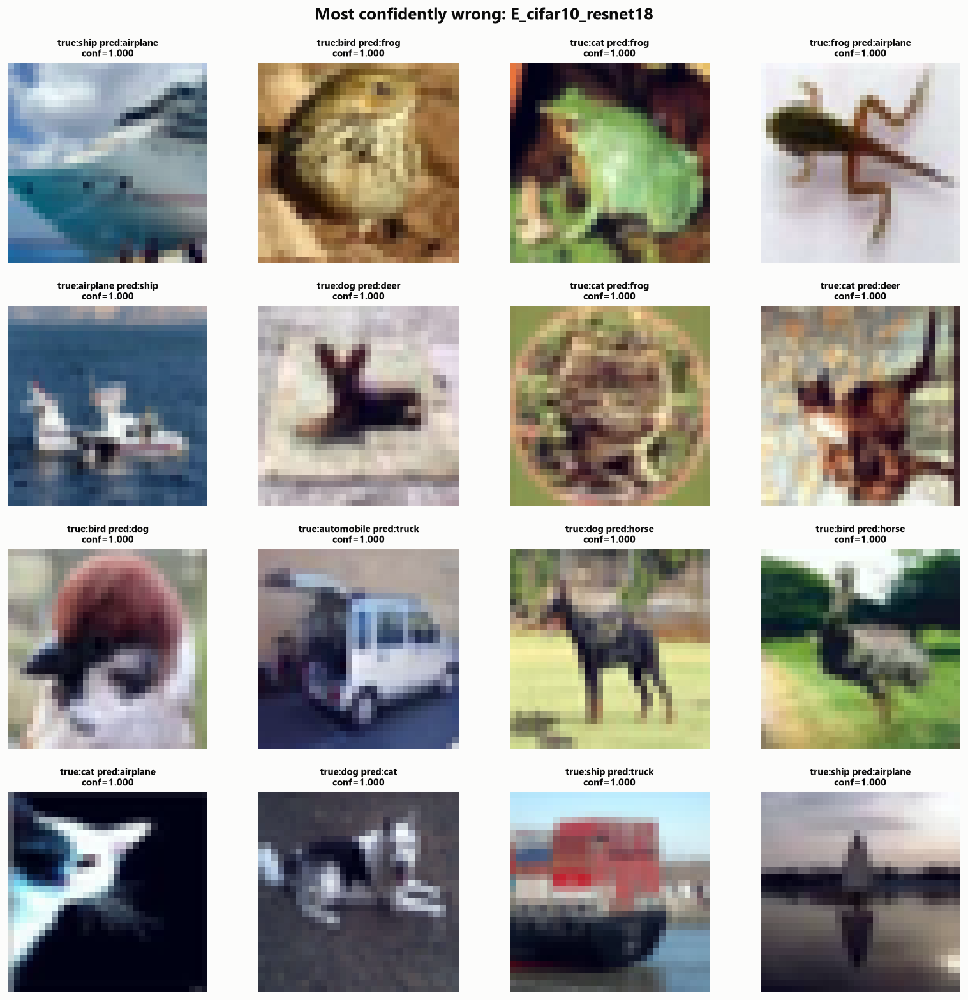
Looking through them honestly: some are legitimately ambiguous. There's a "ship" predicted "airplane" that's a tight crop of what genuinely looks like a jet's nose cone — I'd have hesitated on that one too. A "cat" called "frog" fills the frame with green foliage and no clear silhouette. Label noise and hard crops are real, and pretending every mistake is a pure model failure would be dishonest.
But plenty of the others aren't ambiguous at all — a dog confidently called a cat, an automobile called a truck for what's obviously a small van. Those are real, systematic blind spots (vehicle sub-types, animals photographed against busy textured backgrounds), and no amount of temperature scaling will fix them, because temperature scaling only touches reported confidence — it never touches the ranking, which is where these mistakes actually live.
So what? Practical takeaways
If you made it this far, here's what I'd actually change about how I read a model's results after building all of this:
Log margin and energy alongside accuracy. They're nearly free to compute from logits you already have, and they're the only signal that survives the softmax/argmax bottleneck.
Calibrate before you trust confidence for anything. Fit temperature scaling on a held-out split — it's a five-line addition and it can cut ECE by an order of magnitude, as it did for models E and F here.
Report NLL or Brier score next to accuracy. Two models can match on accuracy and disagree by 2.6x on NLL, exactly like A and B did. That gap is invisible until you look for it.
Don't assume "energy beats softmax for OOD" is universal. It wasn't for D vs. Gaussian noise here. Check it on your own model and your own OOD set before you rely on it.
None of this requires retraining anything. It's all sitting in the logits you're already computing — you just have to stop throwing it away before you look at it.
Standing on shoulders
The overconfidence/miscalibration phenomenon documented throughout this post is a known, well-studied result — see Guo et al., 2017, "On Calibration of Modern Neural Networks." The energy-score angle for OOD detection, including the exact -logsumexp(z) formulation used here, comes from Liu et al., 2020, "Energy-based Out-of-distribution Detection." Max-softmax probability as a baseline for both misclassification and OOD detection traces back to Hendrycks & Gimpel, 2017. Nothing in this post is a new method — it's an intuition-first, geometric, hands-on walkthrough of results that are already known, built from scratch so I could see exactly where they hold and, just as importantly, where they don't.
Code & reproducibility
Every number in this post came from a real run, not a guess — 7 trained models (plus one small illustrative 3-class model for the geometry figures), full metric suite, cached checkpoints and logits, all reproducible from a clean environment on a single RTX 3060 in a few hours.
The full notebook, source code, exported tables, and every figure in this post live here: github.com/eyadXE/what-accuracy-doesnt-tell-you. Clone it, rerun it, or just read the notebook top to bottom — every output cell is followed by the interpretation you just read, computed from that exact run.
If you've got a model in production reporting a confidence number nobody has actually checked, I'd genuinely love to hear what you find when you check it. Thanks for reading this far.
Enjoyed this? I write about AI/ML the same way I build it — hands-on, with real numbers.
Liked it? React, or leave a comment
Comments are powered by GitHub Discussions — sign in with GitHub to react or comment.